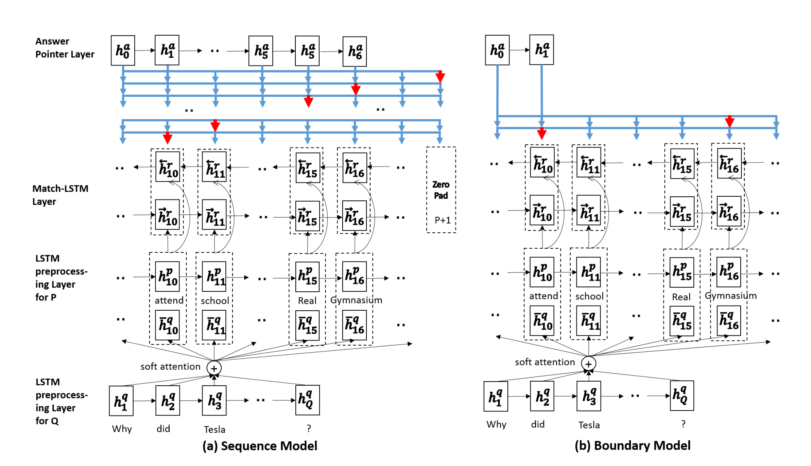

Additional Models¶
Unsupervised Crosslingual Embeddings¶
Overview¶
This model uses a GAN to learn mapping between two language embeddings without supervision as demonstrated in Word Translation Without Parallel Data [1]_.

Files¶
- nlp_architect/data/fasttext_emb.py: Defines Fasttext object for loading Fasttext embeddings
- nlp_architect/models/crossling_emb.py: Defines GAN for learning crosslingual embeddings
- examples/crosslingembs/train.py: Trains the model and writes final crosslingual embeddings to weight_dir directory.
- examples/crosslingembs/evaluate.py: Defines graph for evaluating the quality of crosslingual embeddings
Usage¶
Main arguments which need to be passed to train.py are
- emb_dir: Directory where Fasttext embeddings are present or need to be downloaded
- eval_dir: Directory where evaluation dictionary is downloaded
- weight_dir: Directory where final crosslingual dictionaries are defined
Use the following command to run training and generate crosslingual embeddings file:
python train.py --data_dir <embedding dir> --eval_dir <evaluation data> \
--weight_dir <save_data> --epochs 1
Example Usage¶
Make directories for storing downloaded embeddings and multi language evaluation dictionaries
mkdir data
mkdir ./data/crosslingual/dictionaries
Run training sequence pointing to embedding directory and multi language evaluation dictionaries. After training it will store the mapping weight and new cross lingual embeddings in weight_dir
python train.py --data_dir ./data --eval_dir ./data/crosslingual/dictionaries --weight_dir ./
Results¶
When trained on English and French embeddings the results for word to word translation accuracy are as follows
| Eval Method | K=1 | K=10 |
|---|---|---|
| NN | 53.0 | 74.13 |
| CSLS | 81.0 | 93.0 |
References¶
| [1] | Alexis Conneau, Guillaume Lample, Marc’Aurelio Ranzato, Ludovic Denoyer, Herve Jegou Word Translation Without Parallel Data https://arxiv.org/pdf/1710.04087.pdf |
| [2] | P.Bojanowski, E. Grave, A. Joulin, T. Mikolov, Enriching Word Vectors with Subword Information https://arxiv.org/abs/1607.04606 |
End-to-End Memory Networks for Goal Oriented Dialogue¶
Overview¶
This directory contains an implementation of an End-to-End Memory Network for goal oriented dialogue in TensorFlow.
Goal oriented dialogue is a subset of open-domain dialogue where an automated agent has a specific goal for the outcome of the interaction. At a high level, the system needs to understand a user request and complete a related task with a clear goal within a limited number of dialog turns. This task could be making a restaurant reservation, placing an order, setting a timer, or many of the digital personal assistant tasks.
End-to-End Memory Networks are generic semi-recurrent neural networks which allow for a bank of external memories to be read from and used during execution. They can be used in place of traditional slot-filling algorithms to accomplish goal oriented dialogue tasks without the need for expensive hand-labeled dialogue data. End-to-End Memory Networks have also been shown to be useful for Question-Answering and information retrieval tasks.
End-to-End Memory Network
Goal Oriented Dialog

Files¶
- nlp_architect/data/babi_dialog.py: Data loader
classto download data if not present and perform preprocessing. - nlp_architect/models/memn2n_dialogue.py: Implementation of
MemN2N_Dialogclass for dialogue tasks. - examples/memn2n_dialog/train_model.py: Training script to load dataset and train memory network.
- examples/memn2n_dialog/interactive.py: Inference script to run interactive session with a trained goal oriented dialog agent.
- examples/memn2n_dialog/interactive_utils.py: Utilities to support interactive mode and simulate backend database.
Datasets¶
The dataset used for training and evaluation is under the umbrella of the Facebook bAbI dialog tasks (https://research.fb.com/downloads/babi/, License: https://github.com/facebook/bAbI-tasks/blob/master/LICENSE.md). The terms and conditions of the data set license apply. Intel does not grant any rights to the data files. The dataset is automatically downloaded if not found, and the preprocessing all happens at the beginning of training.
There are six separate tasks, tasks 1 through 5 are from simulated conversations between a customer and a restaurant booking bot (created by Facebook), and task 6 is more realistic natural language restaurant booking conversations as part of the dialog state tracking challenge.
The descriptions of the six tasks are as follow:
- bAbI dialog dataset:
- Task 1: Issuing API Calls
- Task 2: Updating API Calls
- Task 3: Displaying Options
- Task 4: Providing Extra Information
- Task 5: Conducting Full Dialogs
- Dialog State Tracking Challenge 2 Dataset:
- Task 6: DSTC2 Full Dialogs
Running Modalities¶
Training¶
To train the model without match type on full dialog tasks, the following command can be used:
python examples/memn2n_dialog/train_model.py --task 5 --weights_save_path memn2n_weights.npz
The flag --use_match_type can also be used to enable match type features (for improved out-of-vocab performance but slower training).
Interactive Mode¶
To begin interactive evaluation with a trained model, the following command can be used:
python examples/memn2n_dialog/interactive.py --weights_save_path memn2n_weights.npz
Interactive evaluation begins at the end of training and works as an interactive shell. Commands available for the shell are as follows:
- help: Display this help menu
- exit / quit: Exit interactive mode
- restart / clear: Restart the conversation and erase the bot’s memory
- vocab: Display usable vocabulary
- allow_oov: Allow out of vocab words to be replaced with <OOV> token
- show_memory: Display the current contents of the bot’s memory
- show_attention: Show the bot’s memory & associated computed attention for the last memory hop
Otherwise, the interactive mode operates as a chat bot, responding to dialog to assist with restaurant booking. Vocabulary of the model is limited, please use the vocab command to see what the model actually understands.
Results¶
The model was trained and evaluated on the 6 bAbI Dialog tasks with the following results.
| Task | This | Published | This (w/ match-type) | Published (w/ match-type) |
|---|---|---|---|---|
| 1 | 99.8 | 99.9 | 100.0 | 100.0 |
| 2 | 100.0 | 100.0 | 100.0 | 98.3 |
| 3 | 74.8 | 74.9 | 74.6 | 74.9 |
| 4 | 57.2 | 59.5 | 100.0 | 100.0 |
| 5 | 96.4 | 96.1 | 95.6 | 93.4 |
| 6 | 48.1 | 41.1 | 45.4 | 41.0 |
References¶
- Paper: A. Bordes, Y. Boureau, J. Weston. Learning End-to-End Goal-Oriented Dialog 2016
- Reference TF Implementation: chatbot-MemN2N-tensorflow (no match-type or interactive mode)
Reading Comprehension¶
Overview¶
This directory contains an implementation of the boundary model(b in the Figure) Match LSTM and Answer Pointer network for Machine Reading Comprehension. The idea behind this method is to build a question aware representation of the passage and use this representation as an input to the pointer network which identifies the start and end indices of the answer.
Model Architecture¶
Files¶
- examples/reading_comprehension/train.py -Implements the end to end model along with the training commands
- examples/reading_comprehension/utils.py- Implements different utility functions to set up the data loader and for evaluation.
- examples/reading_comprehension/prepare_data.py- Implements the pipeline to preprocess the dataset
- nlp_architect/models/matchlstm_ansptr.py- Defines the end to end MatchLSTM and
Answer_Pointernetwork for Reading Comprehension
Dataset¶
This repository uses the SQuAD dataset. The preprocessing steps required prior to training are listed below:
cd examples/reading_comprehension/; mkdir data
2. Download the official SQuAD-v1.1 training (train-v1.1.json) and development(dev-v1.1.json) datasets from here and place the extracted json files in the data directory. For more information about SQuAD, please visit https://rajpurkar.github.io/SQuAD-explorer/.
The terms and conditions of the data set license apply. Intel does not grant any rights to the data files.
3. Download the GloVe pretrained embeddings from http://nlp.stanford.edu/data/glove.6B.zip and copy glove.6B.300d.txt file into the data directory. For more information about GloVe please visit https://nlp.stanford.edu/projects/glove/. The terms and conditions of the data set license apply. Intel does not grant any rights to the data files.
4. Preprocess the data set using the following command:
python examples/reading_comprehension/prepare_data.py --data_path data/
Running Modalities¶
Training & Inference¶
Train the model using the following command:
python examples/reading_comprehension/train.py --data_path data/
To visualize predicted answers for paragraphs and questions in the validation dataset (ie run inference with batch_size=1) use the following command:
python train.py --restore_model=True --inference_mode=True --data_path=data/ --model_dir=/path/to/trained_model/ --batch_size=1 --num_examples=50
The command line options available are:
| --data_path | enter the path to the preprocessed dataset |
| --max_para_req | enter the max length of the paragraph to truncate the dataset. Default is 300. |
| --epochs | enter number of epochs to start training. Default is 15. |
| --gpu_id | select the gpu id train the model. Default is 0. |
| --train_set_size | |
| enter the size of the training set. Default takes in all examples for training. | |
| --batch_size | enter the batch size. Default is 64. |
| --hidden_size | enter the number of hidden units. Default is 150. |
| --model_dir | enter the path to save/load model. |
| --select_device | |
| select the device to run training (CPU, GPU etc) | |
| --restore_model | |
| choose whether to restore training from a previously saved model. Default is False. | |
| --inference_mode | |
| choose whether to run inference only | |
| --num_examples | enter the number of examples to run inference. Default is 50. |
Results¶
After training starts, you will see outputs similar to this:
Loading Embeddings
creating training and development sets
Match LSTM Pass
Answer Pointer Pass
Setting up Loss
Set up optimizer
Begin Training
Epoch Number: 0
iteration = 1, train loss = 13.156427383422852
F1_Score and EM_score are 0.0 0.0
iteration = 21, train loss = 12.441322326660156
F1_Score and EM_score are 8.333333333333332 0.0
iteration = 41, train loss = 10.773386001586914
F1_Score and EM_score are 6.25 6.25
iteration = 61, train loss = 11.69123649597168
F1_Score and EM_score are 6.25 6.25
Please note that after each epoch you will see the validation F1 and EM scores being printed out. These numbers are a result of a much stricter evaluation and lower than the official evaluation numbers.
Considering the default setting, which has training set of 85387 examples and a development set of 10130 examples after 15 epochs, you should expect to see a F1 and EM scores on the development set similar to this:
| F1 Score: | ~62% |
|---|---|
| EM Score: | ~48% |
References¶
| [1] | SQuAD: 100,000+ Questions for Machine Comprehension of Text. Authors: Pranav Rajpurkar, Jian Zhang, Konstantin Lopyrev, Percy Liang. Subjects: Computation and Language(cs.CL). arXiv:1606.05250 [cs.CL][https://arxiv.org/abs/1606.05250]. License: https://creativecommons.org/licenses/by-sa/4.0/legalcode |
| [2] | Jeffrey Pennington, Richard Socher, and Christopher D. Manning. 2014 https://nlp.stanford.edu/pubs/glove.pdf. License: http://www.opendatacommons.org/licenses/pddl/1.0/ |
| [3] | Wang, S., & Jiang, J. (2016). Machine comprehension using match-lstm and answer pointer. arXiv preprint arXiv:1608.07905. [https://arxiv.org/abs/1608.07905] |